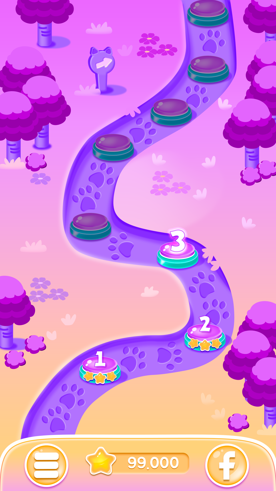
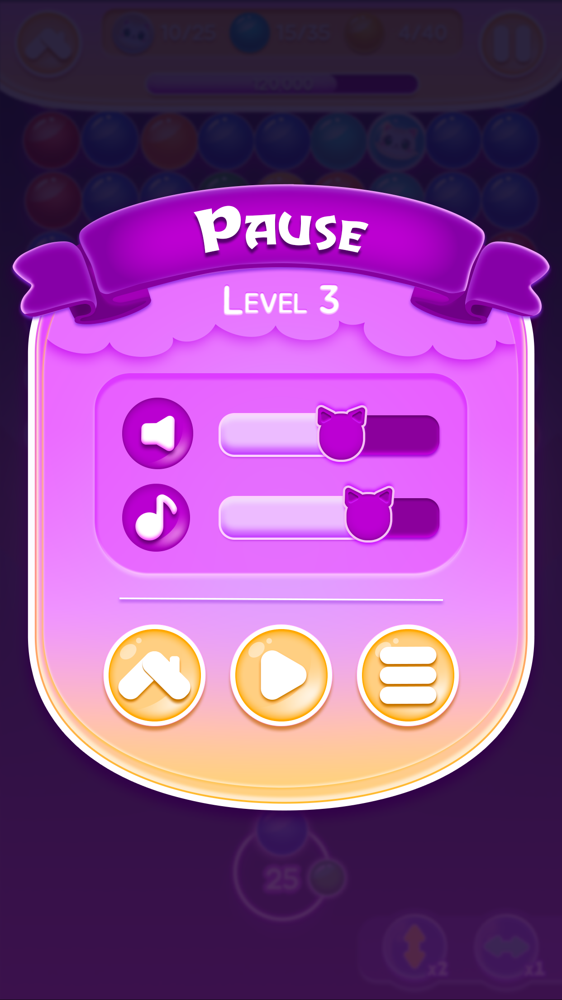
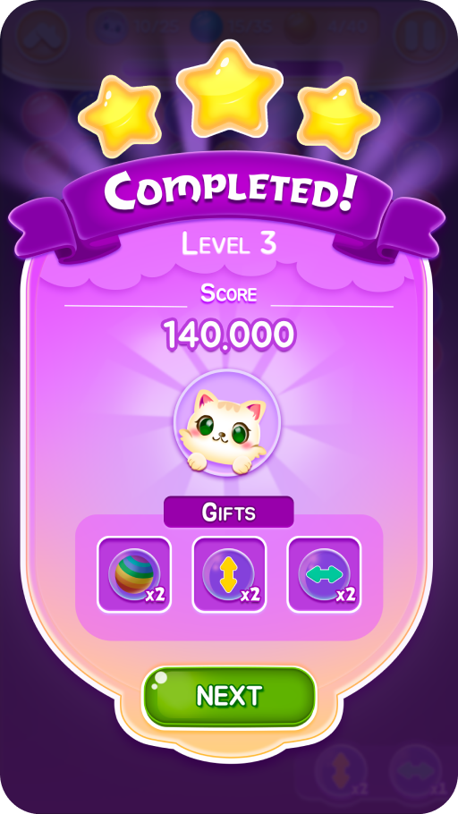

Bubble Shooter.
A diploma project exploring the full interface of a mobile bubble shooter, including gameplay, level selection, settings and results.
Overview
The project brings the core screens of a mobile bubble shooter together into one cohesive experience. The screen set covers the path from opening the game to choosing a level, playing and seeing the result.
Gameplay
The gameplay screen keeps the bubble field and aiming action central, with supporting information arranged around the play space.

Supporting screens
Level selection and settings extend the same visual language beyond the core game loop.


